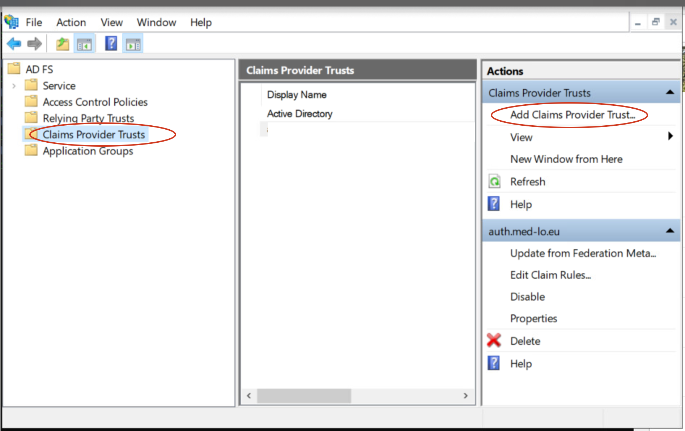
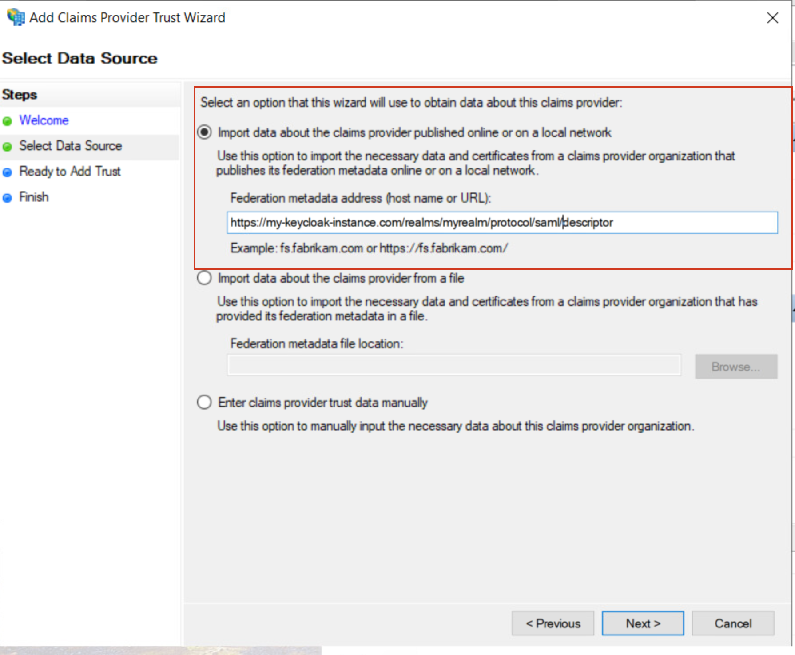
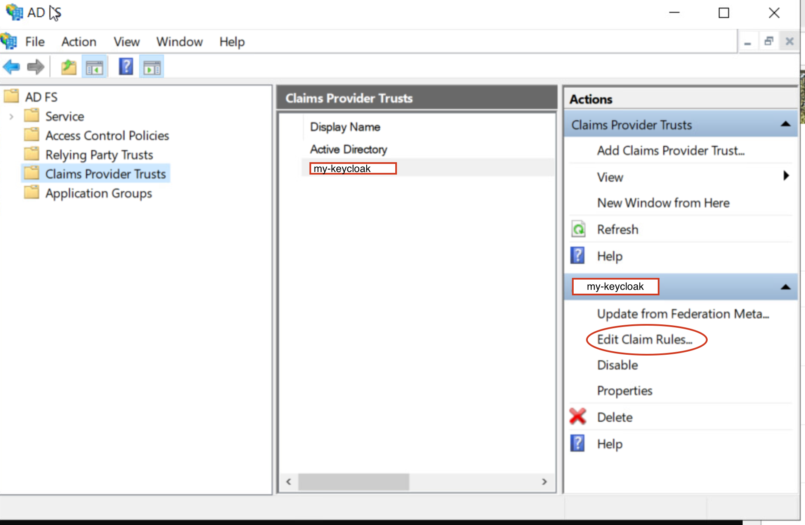
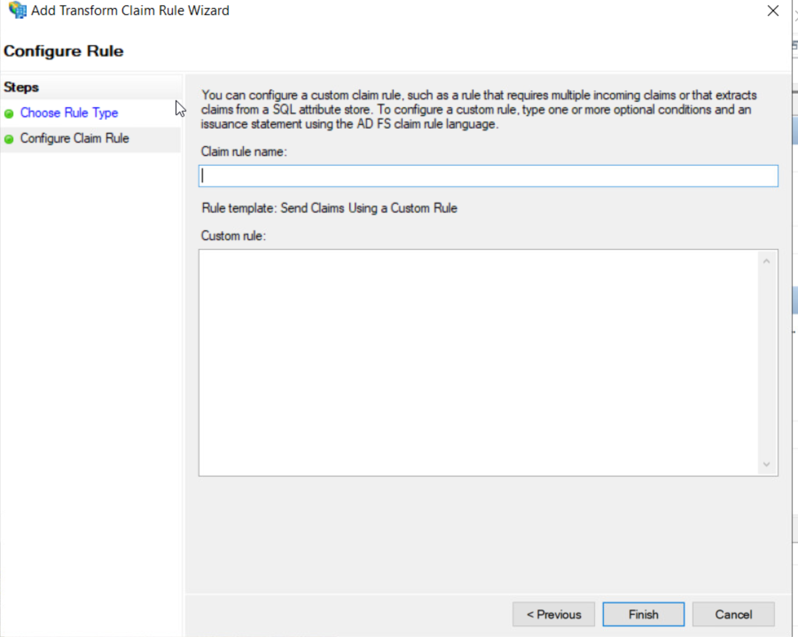

What?
This is a post about how to use Keycloak (or another SAML-supporting IdP) as an IdP for Entra ID via ADFS. Or, putting it in more technically correct terms, how to use Keycloak as an IdP for an ADFS instance that is federated with Entra ID.
I decided to write this after suffering a lot to find good documentation and/or reports on how this should be done.
Disclaimers
I think it is fair to say a few things before we get started:
- I don’t like Microsoft. You’ll see a bit why when you keep reading this document.
- I am not, and never have been, a Windows user. So my experience on Windows is quite limited
- This document represents my own opinions and ideology, and not those of my employer.
Thanks to my awesome Windows colleagues who helped me testing a few of these things that I describe here.
Why?
I am glad you ask.
You see, there are many reasons why you’d want to federate your authentication when using Microsoft:
- You might have your on-premise Keycloak or another IdP, but you also have Microsoft services, and users end up having two different authentication portals;
- You don’t like ADFS’ own authentication portal;
- You certainly don’t want to export your password hashes to Microsoft, especially in these Trump-times.
The good thing is that by going this route, your users will have single-sign on between your Microsoft and their apps (including those you register on Entra ID) and your Keycloak-based authentication provider and apps that use its instance for authentication.
The bad thing is that you need to choose what to do with 2FA. Will you keep it on Microsoft? Will you use Keycloak’s 2FA options? Either way, there are options we will discuss.
Introduction
Suppose your organization uses Entra ID, and it isn’t ready to sync your users’ passwords to your Entra/Azure tenant. You still want to provide on-prem authentication.
Entra ID allows this in what is called “federated” authentication. But this is Microsoft: they simply are unable to use their definitions in a consistent way. If you google “federated authentication microsoft”, you will see that what they call “federated authentication” can be two things:
- Having authentication delegated to an external IdP, as described here.
- Having an external IdP configured for external users, ie, not your own users, as described here.
We are interested in authenticate our own users on our premises. This is something Microsoft does not document well and they don’t really go out of their way to help with this, since they really want you to export your password hashes to the cloud. But it is supported nevertheless.
So you have two (actually three) options here if you want to use on-premise authentication:
- use the good’ol ADFS;
- use Keycloak directly, by configuring Keycloak as a SAML federated IdP for Entra ID;
- use the good’ol ADFS, but configuring it to use Keycloak as its IdP.
Why don’t you just federate with Keycloak directly? Well, because Microsoft. They list some limitations on the document about how to configure a SAML IdP, but the real deal is if you use Intune with Entra ID, device registration won’t work if the IdP you use does not support the protocol who is dying but Microsoft keeps it breathing: WS-Fed. You can read about this limitation here, but the problem is that nobody, including Keycloak, supports WS-Fed.
But not everything is lost: you can still use ADFS (which also refuses to die), and configure it to redirect your users to your on-premises IdP - in our case, Keycloak. So while you won’t get rid of ADFS, it will give you the compatibility you need.
Configuring ADFS to use Keycloak as an IdP
Here we need to clarify a few definitions, because Microsoft refuses to call things like everyone else.
Look at this table:
| Microsoft | SAML | OAuth2 |
| Claims Provider Trust | SSO IdP | IdP/Resource server/ |
| Relying Party Trust | SSO SP (Service Provider) | client |
So here what you need is to configure Keycloak as a Claims Provider Trust (CPT) on your ADFS. A Claims Provider Trust is basically an IdP. The default CPT in ADFS is Active Directory, but you can configure a SAML (or a WS-Fed) IdP there as well.
A Relying Party Trust (RPT) is an application that authenticates via your ADFS. In other words, they authenticate on one (or more) of your CPT’s. In SAML lingo, they are SP (Service Providers). In the scenario we are talking about here, where Entra ID will send users to its federated authentication IdP, the RPT is… Entra ID! But you probably know that by now: when you use Entra Connect to configure User sign in so that users will authenticate on ADFS, it creates an RPT that points to Entra ID on your ADFS.
So, without further ado, how do you add Keycloak as an IDP?
- open ADFS, click on Claims Provider Trust on your left, and then Add Claims Provider Trust on your right

- On the window that shows up, choose “Start”
- Enter the SAML metadata for your keycloak instance and realm, something like https://
/realms/ /protocol/saml/descriptor:

- follow the additional steps which are self explanatory.
There, now Keycloak is an IdP. But you are far from done, my friend. This is Microsoft, and you need to get into the Microsoft way of doing things…
Claims, claims and more claims
Coming from Keycloak world, you are used to something called account matching: you can configure Keycloak in a way that, when you use an external IdP, if the username or e-mail of the external user already exists on your user base, it will then establish a link between the external and internal users, so that the internal user’s attributes are the ones that Keycloak sends to the applications. This is a way to simplify it, things can be configured differently, but the point is that a pretty default way of using keycloak is establishing links between internal and external users.
ADFS works very differently. When you configure a CPT, the user claims received from Keycloak are not used to fetch a user and all their attributes. If you want to match a Keycloak user to an Active Directory user (and you know you want that), you need to match claim by claim. You cannot simply say “Oh, fetch me the user myuser@mydomain.com and their attributes”. You need, in a way, reconstruct the claims your RPT needs.
When configuring Keycloak to be used as an IdP for ADFS on an Entra ID scenario, you will see that Entra ID expects a lot of claims in a very special format, something like that http://schemas.xmlsoap.org/ws/2005/05/identity/claims/emailaddress. So you need to provide a claim like that.
Let’s see how you do that:
- Add Claim rules to your newly created CPT

- Click on “Add rule” on the window that shows up.
- Choose “Send claims Using a Custom Rule”:

I am using custom rules here because I need to translate the claims from Keycloak to those used by Entra ID. I could use other types of rules (like for example “passthrough” if the claims already come with the right claim name from Keycloak. This is really up to you.
You’ll get a window like this:

Here you need to enter something in a Microsoft ADFS Claim language. Basically what you want is to say:
- Which claim received from Keycloak you want to do something about;
- How that claim will be called (and made available to) the RPT’s.
Let’s start with the userPrincipalNameclaim. Entra ID requires the so-called UPN in a few formats. So if you have a claim in keycloak that gets your user in the user@domainformat, you fetch it, and give it a name Entra ID will like. For example:
c:[Type == "userPrincipalName"]
=> issue(store = "Active Directory", types = ("http://schemas.xmlsoap.org/ws/2005/05/identity/claims/emailaddress", "http://schemas.xmlsoap.org/ws/2005/05/identity/claims/givenname", "http://schemas.xmlsoap.org/ws/2005/05/identity/claims/surname", "http://schemas.xmlsoap.org/ws/2005/05/identity/claims/upn",
"http://schemas.xmlsoap.org/claims/UPN"),
query = "(userPrincipalName={0});mail,givenName,sn,userPrincipalName,userPrincipalName;MYDOMAIN\adfs", param = c.Value);
Ok, this is confusing. What happens here?
- I get a claim from Keycloak called
userPrincipalName - I query that claim in Active Directory to find a user that matches it
- I assign this user’s
mailgivenName,snanduserPrincipalNameto the clames on the “types” array.
Of course, you can simply send the claims with values you fetch from Keycloak, this is fine. But I’d rather use Active Directory as an authoritative source for the user’s identity.
The
MYDOMAIN\adfsis something not clear to me. It seems that you put any user here, and it will work - as a sort of placeholder. But in some documents I read this needs to be an existing user, specifically one that binds to AD. I admit I am not sure, so I just used one I created when configuring ADFS. Again, Microsoft’s documentation is not very nice here.
You still need to add two more rules. After saving the first one, add another rule, like the first one, but with the following content:
c:[Type == "userPrincipalName"]
=> issue(store = "Active Directory", types = ("http://schemas.microsoft.com/LiveID/Federation/2008/05/ImmutableID"), query = "(userPrincipalName={0});ms-DS-ConsistencyGuid;MYDOMAIN\adfs", param = c.Value);
Again you use the userPrincipalNameto fetch an attribute that will be used as the ImmutableID.
The last mandatory rule is this one:
c:[Type == "userPrincipalName"]
=> issue(Type = "http://schemas.microsoft.com/ws/2008/06/identity/claims/windowsaccountname", Value = "MYDOMAIN\" + regexreplace(c.Value, "^(.*?)@.*$", "$1"));
You are good to go! Now you’re ready to test it. Go to https://login.microsoftonline.com, enter your username, and you will be redirect to your Keycloak instance. Or maybe you will see a list with your Keycloak instance name and Active Directory. This is fine for testing, but I guess you want the user to be sent right away to Keycloak.
If so, use the following command:
Set-AdfsProperties -EnableLocalAuthenticationTypes $false
I configured way more claims on my test instance. That’s because I see that Entra ID, on its RPT’s Claims Issuance Policy, uses a few other claims that Active Directory has, but Keycloak doesn’t, such as primary group,
objectguid,msdsconsitencyguid, etc. But to be honest Ii am not sure you need all those. At the end of this articlel I give you a list of all the rules I configured, and you can decide if you want to configure them or not.
2FA or not 2FA? That’s the question
Now, suppose you have 2FA configured in Keycloak, or in Entra, or in both. You need an strategy here: are you going to use Keycloak’s, Microsoft Entra’s, or both? Both is not ideal, of course.
The issue here is that you might want to give up Microsoft’s 2FA. For security reasons, you might not want to turn off Keycloak’s 2FA for the ADFS client. You want to make sure that a Keycloak user who authenticated via Keycloak has used 2FA.
The problem is this: suppose you turn off 2FA in Keycloak for the ADFS authentication, relying on Entra ID’s 2FA. The user will authenticate in Keycloak, but just with username and password. The same user don’t go ahead with Entra ID authentication. But he is already fully authenticated in Keycloak! So if he goes ahead to another application, he’ll be already logged in, thus skipping 2FA.
So that’s why you want to keep 2FA in Keycloak, but, in such integration you might want to send a message to Entra saying “Never mind, this user has already used 2FA with me, let him without further ado”.
This is something where the documentation fails blatantly. So what you have to do is to add a Claim Issuance Policy to your RPT (in this case, Entra’s RPT, usually called “Microsoft Office 365 Identity Platform Worldwide”, and add a rule there:

Then choose “Add rule”, “Sending claims using a custom rule”, and enter the following rule:
=> issue(Type = "http://schemas.microsoft.com/claims/authnmethodsreferences", Value = "http://schemas.microsoft.com/claims/multipleauthn");
Please notice that this will also make Entra ID stop asking for 2FA even if you actually authenticate from Active Directory. To avoid that, don’t configure the rule above. Instesd, configure it on the CPT, and add it again to the RPT, like this:
CPT:
=> issue(Type = "http://schemas.microsoft.com/claims/authnmethodsreferences", Value = "http://schemas.microsoft.com/claims/multipleauthn");
RPT:
c:[Type == "http://schemas.microsoft.com/claims/authnmethodsreferences", Issuer = "mykeycloakcpt"]
=> issue(claim = c);
Remember to replace “mykeycloakcpt” for the name of your CPT that has your Keycloak configuration.
This was just another example how Microsoft’s documentation can be misleading. The documenttaion found here never worked. It seems the claims were all wrong. It was only after seing how Ping does it that we got it right: See here.
Oh, and run these Powershell commands:
Run these two commands on Powershell:
Update-MgDomainFederationConfiguration -DomainId <yourdomain> -InternalDomainFederationId <yourdomainfederationid> -PromptLoginBehavior nativeSupport
and
Update-MgDomainFederationConfiguration -DomainId <yourdomain> -InternalDomainFederationId <yourdomainfederationid> -federatedIdpMfaBehavior acceptIfMfaDoneByFederatedIdp
Conclusion
I hope this helps you to configure Keycloak as an IdP for Entra ID. It’s recommended to test this with a lot of authentication scenarioes, like e-mail, device enrollment, etc, to see if everything works.
Appendix
Here is a list of other CPT rules I configured, though I’m almost sure we din’t need them:
[](msdsconsitencyguid:
c:[Type == "userPrincipalName"]
=> issue(store = "Active Directory",
types = ("http://schemas.microsoft.com/ws/2016/02/identity/claims/msdsconsistencyguid"),
query = "(userPrincipalName={0});ms-DS-ConsistencyGuid;MYDOMAIN\adfs",
param = c.Value);
objectguid:
c:[Type == "http://schemas.xmlsoap.org/ws/2005/05/identity/claims/upn"]
=> issue(store = "Active Directory",
types = ("http://schemas.microsoft.com/ws/2008/06/identity/claims/objectguid"),
query = "(userPrincipalName={0});objectGUID;MYDOMAIN\adfs",
param = c.Value);
groupsid:
c:[Type == "http://schemas.xmlsoap.org/ws/2005/05/identity/claims/upn"]
=> issue(store = "Active Directory",
types = ("http://schemas.microsoft.com/ws/2008/06/identity/claims/groupsid"),
query = "(userPrincipalName={0});tokenGroupsSid;MYDOMAIN\adfs",
param = c.Value);
Account type:
c:[Type == "http://schemas.xmlsoap.org/ws/2005/05/identity/claims/upn"]
=> issue(store = "Active Directory",
types = ("http://schemas.microsoft.com/ws/2012/01/accounttype"),
query = "(userPrincipalName={0});objectClass;MYDOMAIN\adfs",
param = c.Value);
onpremobjectguid:
c:[Type == "userPrincipalName"]
=> issue(store = "Active Directory", types = ("http://schemas.microsoft.com/identity/claims/onpremobjectguid"), query = "(userPrincipalName={0});objectGUID;MYDOMAIN\adfs", param = c.Value);
primarysid:
c:[Type == "userPrincipalName"]
=> issue(store = "Active Directory", types = ("http://schemas.microsoft.com/ws/2008/06/identity/claims/primarysid"), query = "(userPrincipalName={0});objectSid;MYDOMAIN\adfs", param = c.Value);
)